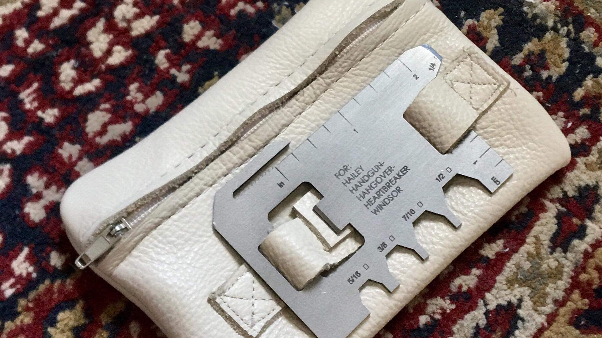
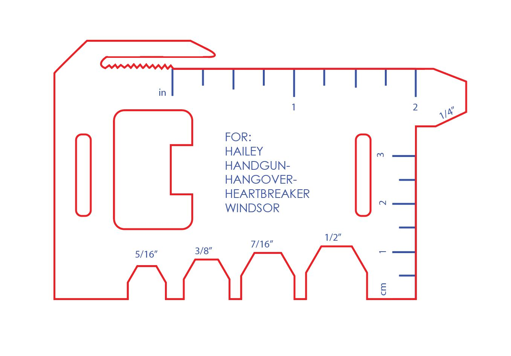

Hailey's Wallet.
TLDR, Hailey never carried a wallet on her so she would always carry her credit cards, ID, and bus pass in her pocket. No wallet, binder clip, not even a rubber band tied around it. So a while back, I made her a wallet out of cardstock and electric tape. To no surprise to anyone, that wallet didn’t do so hot when exposed to things like water.
So when I came to the invention lab a month ago and I saw a little pile of Hailey’s cards on the table, I decided that I was going to make her another wallet.
So I did some research to try and find the most functional wallet on the market. After a sad “best wallets for men” Google search, I found a company that made wallets that were built around a simple, flat multi-tool. I knew that a makerspace at UC Berkeley had a water-jet cutter so I got on Adobe Illustrator and started mocking up a flat multitool.
When I got to the makerspace, one of my former GSIs ended up helping me use the FabLight, a kind of laser cut that can cut thin pieces of metal. He prepared my file and helped me polish and file the metal tool.

I then found an old leather head seat cover in one of the scrap bins. I strategically cut a square around the zipper and prayed that my $30 sewing machine could sew through two layers of leather (it did! After only 2 broken needles!). And Ta Da! Hailey has a wallet!